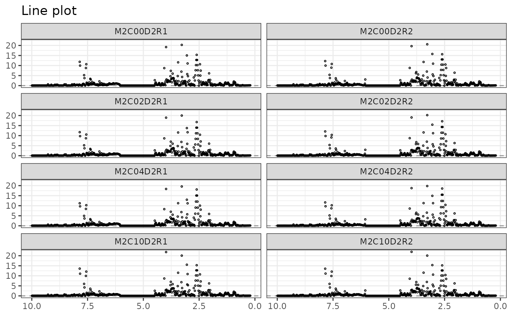
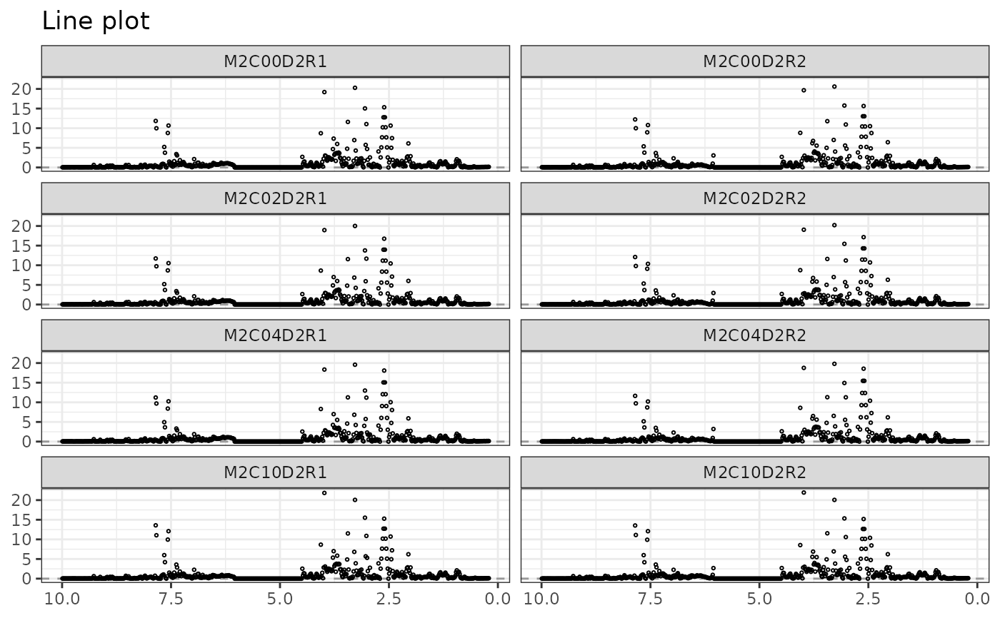

Generates the response profile of one or more observations i.e. plots of one or more rows of the outcomes matrix on the y-axis against the \(m\) response variables on the x-axis. Depending on the response type (spectra, gene expression...), point, line or segment plots can be used.
Arguments
- Y
A numerical matrix containing the rows to be drawn.
- rows
A vector with either the row name(s) of the \(Y\) matrix to plot (character) or the row index position(s) (integer). Default to 1.
- type
Type of graph to be drawn:
"p"for point,"l"for line (default) or"s"for segment.- title
Plot title.
- xlab
If not
NULL, label for the x-axis.- ylab
If not
NULL, label for the y-axis.- xaxis_type
The data type of the x-axis: either
"numeric"(default) or"character".- stacked
Logical. If
TRUE, will draw stacked plots, otherwise will draw separate plots.- ncol
If
stackedisFALSE, the number of columns to represent the separate plots. Default to1.- nrow
If
stackedisFALSE, the number of rows to represent the separate plots.- facet_label
If
stackedisFALSE, the labels of the separate plots.- hline
If not
NULL, draws (a) horizontal line(s), by default at y intercept = 0.- size
Argument of length 1 giving the points size (if
type=="p") or the line size (iftype=="l"or"s").- color
If not
NULL, argument of length 1 with possible values:"rows", a color name (character) or a numeric value representing a color.- shape
The points shape (default =
1) iftype=="p".- theme
The
ggplot2theme (default:theme_bw()), see?ggthemefor more info.- ang_x_axis
If not
NULL, rotation angle to rotate the x-axis text (based on the argumentaxis.text.xfromggplot2::theme())
Examples
data("UCH")
plotLine(Y = UCH$outcomes)
# separate plots
plotLine(Y = UCH$outcomes, rows = c(1:4), hline = NULL)
 plotLine(Y = UCH$outcomes, rows = c(1:4), color = 2)
plotLine(Y = UCH$outcomes, rows = c(1:8), ncol = 2)
plotLine(
Y = UCH$outcomes, type = "p",
rows = c(1:8), ncol = 2
)
# stacked plots
library(ggplot2)
plotLine(
Y = UCH$outcomes, rows = c(1:4),
stacked = TRUE, color = "rows"
) +
scale_color_brewer(palette = "Set1")

plotLine(Y = UCH$outcomes, rows = c(1:4), color = 2)
plotLine(Y = UCH$outcomes, rows = c(1:8), ncol = 2)
plotLine(
Y = UCH$outcomes, type = "p",
rows = c(1:8), ncol = 2
)
# stacked plots
library(ggplot2)
plotLine(
Y = UCH$outcomes, rows = c(1:4),
stacked = TRUE, color = "rows"
) +
scale_color_brewer(palette = "Set1")
